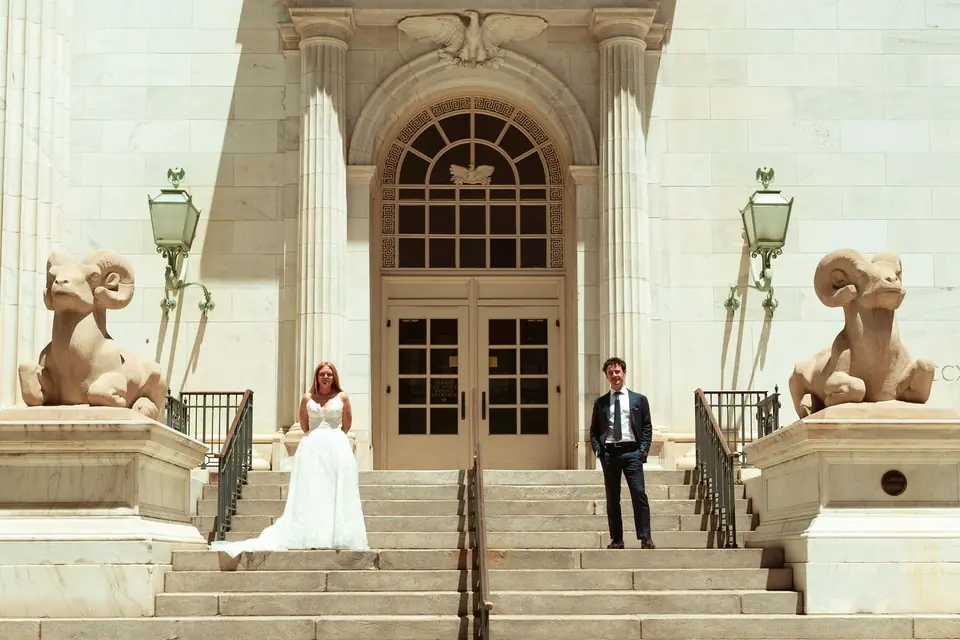
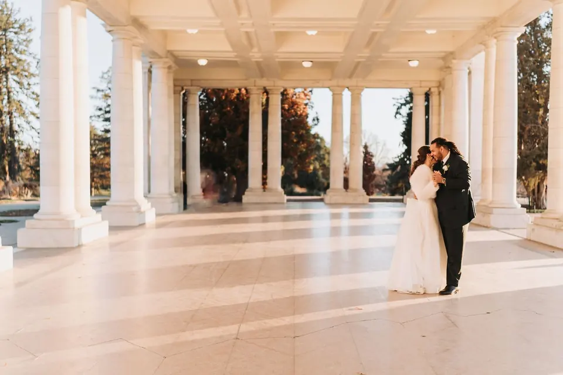

Step 01 / 059–18 months out
Book early
Most couples book 9 to 18 months ahead, especially for spring and fall. Shorter timeline? Ask anyway.
The nervous laughter before you walk down the aisle. The tear-filled vows. The joy on your faces when you say “I do.” Jason is there for every unscripted moment, and keeps it for a lifetime.

Candid first, with gentle direction when you need it. Honest emotion and real interactions, then simple guidance for portraits so you never feel stiff or over-posed.
We’ll still set aside dedicated time for family, wedding party, and any special group photos you’d like. Once those are done, Jason shifts back into a documentary approach so you can enjoy your people while he captures the day as it unfolds.
Every collection includes full-resolution edited images, an online gallery to share with family and friends, and personal print rights. Backup gear and multiple memory cards come to every wedding.

Parish Masses, mountain pavilions, old barns and city streets. Open any frame full size.
Jason understands the flow of a Mass or worship service, and knows how to photograph the important moments while keeping the focus on prayer and the sacrament.
Most couples book 9 to 18 months ahead. Jason occasionally has last-minute availability, so ask.
Most couples book 9 to 18 months ahead, especially for spring and fall. Shorter timeline? Ask anyway.
A relaxed chance to get to know each other and practise being in front of the camera.

Jason connects with your church ahead of time so the day runs quietly and smoothly.
A small preview of your images arrives within the first week.

The full, curated gallery in about 6 to 8 weeks, plus a KISSBOOK or ZNO album if you choose one.
Two collections, shaped around your day, with film whenever you want it.

$2,500

$3,500
From $2,300
From a quiet 3 to 4 minute highlight to a 15 to 20 minute hand-cut feature film, shot in 4K. Most couples choose The Narrative.
See film optionsShape any collection around your day: add a second photographer ($900), an engagement session ($750), or coverage for other events ($750). All prices are negotiable, because everyone deserves beautiful photography, regardless of budget. Build your estimate
Yes. Jason regularly photographs Catholic and Christian weddings and is very comfortable working within church guidelines. He understands the flow of a Mass or worship service and knows how to photograph the important moments while keeping the focus on prayer and the sacrament.
For many weddings, yes. A second photographer is especially helpful for larger guest counts, Catholic Masses, or when you want both of you photographed getting ready in different locations.
Absolutely. We’ll set aside dedicated time for family, wedding-party, and any special group photos you’d like. Once those are done, Jason shifts back into a more documentary approach.
Part of the job is to stay calm and adaptable. Jason will help you adjust the plan, suggest backup portrait locations (inside your church, under cover, or nearby), and make sure we still capture what matters most.
Jason is based in Centennial and photographs weddings throughout Denver, the Front Range, and across Colorado. He’s also happy to travel for out-of-state weddings, especially when you’re coming “home” to get married at a meaningful church or venue.

Maddie & PietroHoly Ghost Catholic Church, Denver wedding with an Inverness reception Read the story
Cheesman ParkSt. Mary’s Littleton wedding with Cheesman Park photos and a Knights of Columbus Hall reception Read the story Sarah & ElijahReception at Nativity of Our Lord Catholic Church
Read the story
Sarah & ElijahReception at Nativity of Our Lord Catholic Church
Read the story